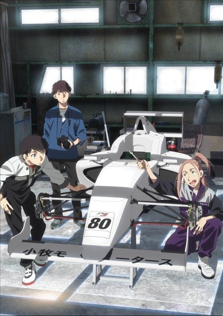

Initial D 1st Stage
頭文字[イニシャル]D
Takumi, a teenager who delivers tofu down a mountain every morning, turns out to be a natural at street racing.
The anime covers the whole manga.
8.2AniList score
—Animeter, no votes yet
81episodes, 5 seasons
Rate it or report where you stopped
5 seasons, 81 episodes
In airing order. Episode numbers on this site count straight through every season, so season 2 starts at episode 27.
1
1998 · TV
Initial D 1st Stage
Episodes1–2626 ep
2
1999 · TV
Initial D 2nd Stage
Episodes27–3913 ep
3
2004 · TV
Initial D 4th Stage
Episodes40–6324 ep
4
2012 · TV
Initial D Fifth Stage
Episodes64–7714 ep
5
2014 · TV
Initial D Final Stage
Episodes78–814 ep
Films, OVAs and specials
Not counted in the episode numbers above.
·
2001 · Film
Initial D 3rd Stage
Sources: AniList
More like Initial D 1st Stage
 Done8.6
Done8.6
 Manga Ch. 5588.7
Manga Ch. 5588.7
 Manga Ch. 1568.3
Manga Ch. 1568.3
 Manga Ch. 1188.1
Manga Ch. 1188.1
 Manga Ch. 577.6
Manga Ch. 577.6
 Manga Ch. 1507.9
Manga Ch. 1507.9
 Original7.9
Original7.9
 Manga Ch. 408.3
Manga Ch. 408.3
 Original8.0
Original8.0

Original7.4 Original8.5
Original8.5
 Manga Ch. 1048.2
Manga Ch. 1048.2